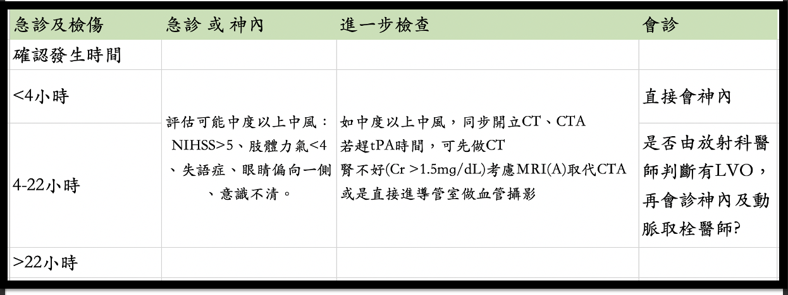
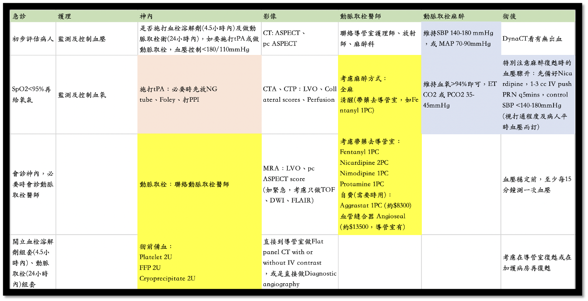

ICD-10 Code Viewer — Taiwan Core Implementation Guide (TW Core IG)
依醫師專科相關性分類，相關領域顯示完整資訊，其他領域以精簡模式儲存
依醫師專科（朱展麟 醫師）相關性篩選之健保支付標準代碼，含支付點數及申報規範。格式符合 TW Core IG Procedure / ServiceRequest / Encounter 規範。
依朱展麟醫師專科相關性（神經內科・神經血管介入・居家醫療・神經調控/DBS・安寧緩和・糖尿病照護）篩選之藥品給付規定。 資料來源：完整給付規定 115.04.23。
依醫師介入手術與復健相關性分類，相關領域顯示完整資訊，其他領域以精簡模式儲存
SOAP 智能衛教平台 — 結構化醫學知識搜尋・個人化語言版本切換
臨床常用參考資源與治療指引連結
依朱展麟醫師專科相關性（神經介入・神經調控・脊椎骨科・顱骨）篩選之全民健康保險特殊材料給付規定。 資料來源：衛福部健保署特材給付規定。
臨床治療流程圖
點擊 EVT 連結以查看完整急性缺血性腦中風血管內取栓治療流程圖。


調整應用程式顯示與行為偏好